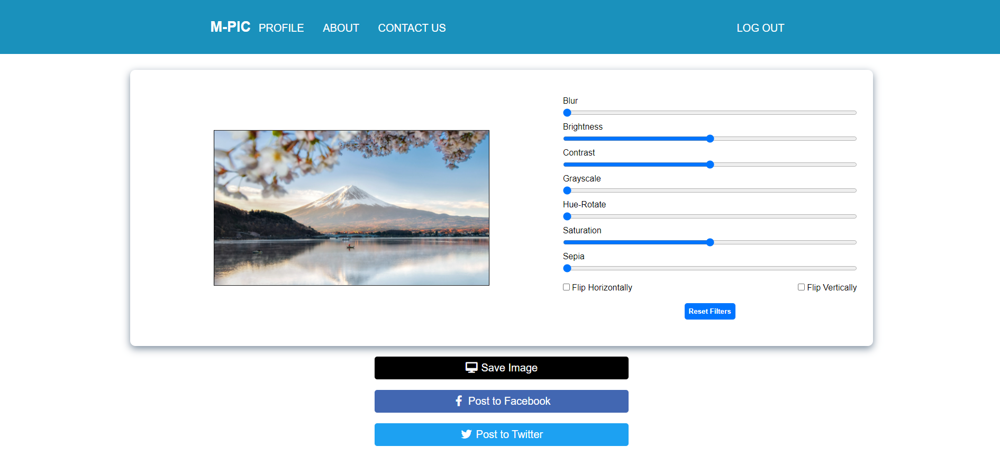
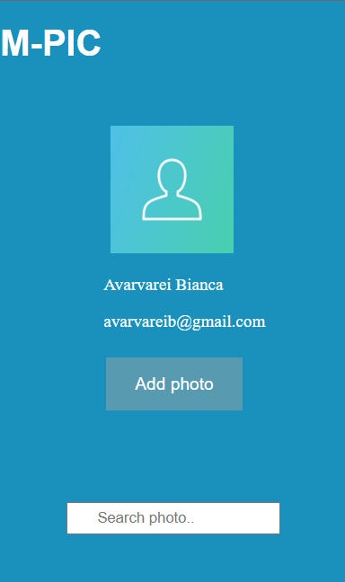
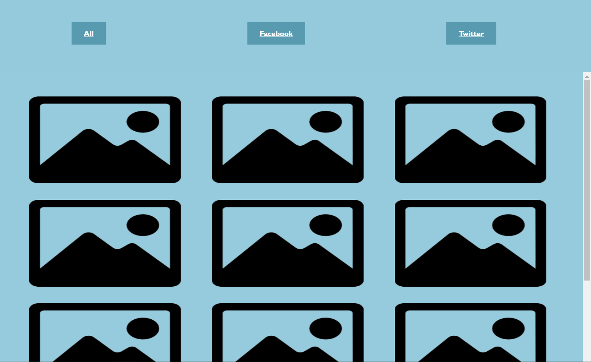

M-Pic is created to help users easily edit their photos.
First, you have to create an account. After that, you just need to log in, in order to keep, search, edit and post your photos anytime you want.
You can import your photos from Facebook and Twitter, also you can post on both applications. Once you have a picture you want to edit, you should
get on the specific page.
Here you can adjust your preferences as you want:

In your profile you can see your information, set a profile photo, add photos or even search them by tags and other information. Here you will find all you need:

Also, you can choose if you want to see all your photos or those from a specific platform.
